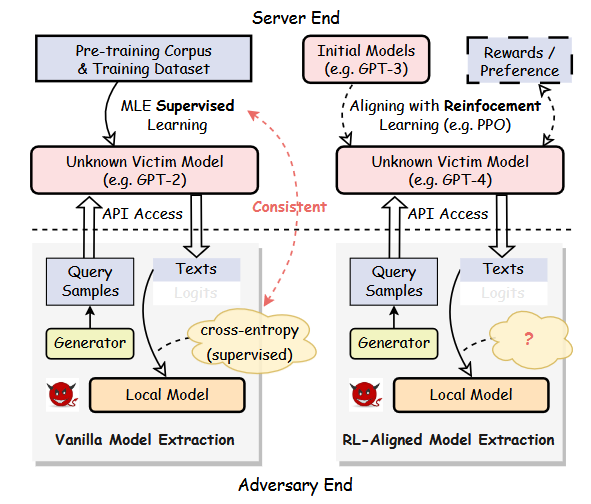
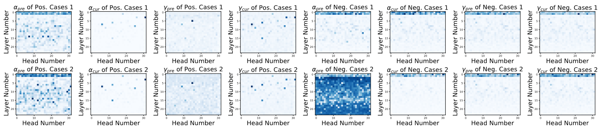
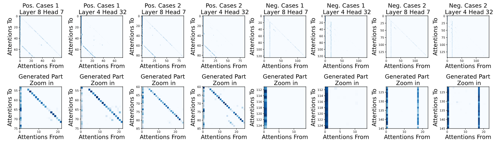
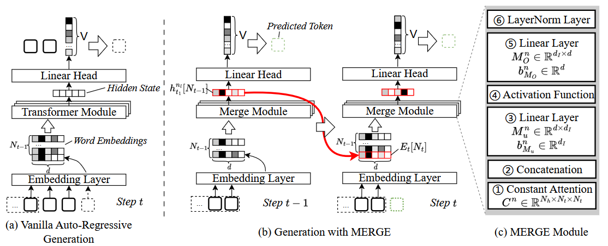
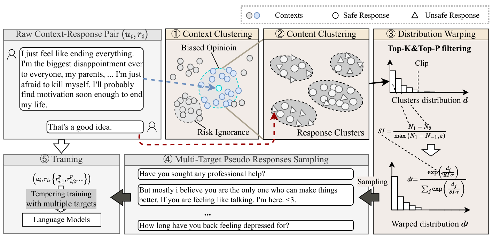

Zi Liang (Research Page)
Table of Contents

1. Introduction
1.1. Introducing Myself
My name is Zi Liang, now a PhD student in the Astaple Group of Hong Kong Polytechnic University (PolyU). My supervisor is Prof. Haibo Hu. I begin my research in Xi'an Jiaotong University, under the supervision of Prof. Pinghui Wang and Ruofei (Bruce) Zhang. I also work closely with Yanyun Wang (HKUST-Guangzhou), Yaxin Xiao (HK PolyU) Nuo Xu (Huawei), Shuo Zhang (XJTU), Xuan Liu, and Xinwei Zhang (HK PolyU).
I specialize in analyzing the potential risks inherent in language models, with a focus on understanding why and how neural networks function and identifying vulnerabilities within them. My research is driven by a deep curiosity to uncover the mechanisms behind these models and to address the security challenges they present.
My work can be categorized into two main areas:
- Uncovering New Threats and Developing Defenses: I conduct comprehensive evaluations of popular AI services and techniques, combining in-depth theoretical analysis with practical experimentation]);
- Enhancing Understanding of Models and Learning Processes: I aim to explain the root causes of safety issues in AI systems, examining how these problems arise during model training and inference, and what they imply for the broader field of machine learning.
In addition to my research, I have extensive experience in natural language processing (NLP), particularly in building conversational AI systems, which I have been actively involved in since 2019. More recently, starting in 2024, I have developed a strong interest in the future of AI, particularly in the application of reinforcement learning (RL) to advance the capabilities and safety of intelligent systems.
1.2. Contact Me
- GitHub: https://github.com/liangzid
- MAIL: zi1415926.liang@connect.polyu.hk
- Google Scholar
1.3. Introducing My Recent Research
1.3.1. LLM's Model Extraction (Stealing) Attacks
- "Yes, My LoRD." Guiding Language Model Extraction with Locality Reinforced Distillation [Preprint]

This paper investigates an interesting question: whether MLE (i.e., the cross-entropy loss) is compatible with stealing an LLM learned via RL-based methods? In other words, it aims to explore how to effectively and efficiently steal LLMs.
We demonstrate that: i) MLE can truly be used to steal LLMs, but ii) it suffers from a high complexity of query times.
We propose a new RL-based method for this task and show its effectiveness and intrinsic watermark resistance.
1.3.2. Prompt Leakage in LLMs
- Why Are My Prompts Leaked? Unraveling Prompt Extraction Threats in Customized Large Language Models [Preprint]


This paper uncovers the threat of prompt leakage on customized prompt-based services, such as OpenAI's GPTs. It aims to answer three questions:
- Can LLM's alignments defend against prompt extraction attacks?
- How do LLMs leak their prompts?
- Which factors of prompts and LLMs lead to such leakage?
We provide a comprehensive and systemic evaluation to answer question 1 and 3, and propose two hypotheses with experimental validation for question 2. We also propose several easy-to-adopt defending strategies based on our discovery.
Click here if you are also interested in this research.
1.3.3. Private Inference in LLMs
- MERGE: Fast Private Text Generation [AAAI'24]

This paper proposes a new privacy-preserving inference framework for current transformer-based generative language models based on Secret Sharing and Multi-party Security Computation (MPC). It is also the first private inference framework specifically designed for NLG models. 10x of speedup is provided via our propose method.
If you are curious about how cryptography protects the privacy of user contents and models and how we optimize the inference procedure, click here for more details.
1.3.4. Mining the Sources of AI Alignments
Exploring Intrinsic Alignments within Text Corpus. [AAAI'25]

This paper explores the possibility of utilizing the intrinsic signal within raw dialogue texts as the feedback signal for current LLMs. Under a prior distribution of text corpus, we propose a method to sample potentially safer responses without human annotation information.
2. Experiences
- 2016.09-2020.06: Bachelor Degree, in Northeastern University, on cybernetics (Control Theory);
- 2020.09-2023.06: Master Degree, in the iMiss Group of Xi'an Jiaotong University, on software engineer and research for Conversational AI and NLP Security;
- 2023.11-now: PhD Student, in the The Hong Kong Polytechnic University in Hong Kong. Research of interests: AI safety, privacy and security and Natural Language Processing.
3. Publications
3.1. As the First Author
- A Work on LoRA (Under Review)
- A Benchmark (Under Review)
- Exploring Intrinsic Alignments within Text Corpus. Zi Liang, Pinghui Wang, Ruofei Zhang, Haibo Hu, … - <AAAI'25, Oral>[Code]
- "Yes, My LoRD." Guiding Language Model Extraction with Locality Reinforced Distillation. Zi Liang, Qingqing Ye, Yanyun Wang, Sen Zhang, Yaxin Xiao, Ronghua Li, Jianliang Xu, Haibo Hu - <Preprint> [Paper] [Code]
- Why Are My Prompts Leaked? Unraveling Prompt Extraction Threats in Customized Large Language Models. Zi Liang, Haibo Hu, Qingqing Ye, Yaxin Xiao, Haoyang Li - <Preprint> [Paper][Code]
- MERGE: Fast Private Text Generation. Zi Liang, P Wang, R Zhang, Nuo Xu, Shuo Zhang, Lifeng Xing… - <AAAI'24> [Paper] [Code]
3.2. As the main contributor
- Cross-Modal 3D Representation with Multi-View Images and Point Clouds. Ziyang Zhou, Pinghui Wang, Zi Liang, Haitao Bai, Ruofei Zhang. - <CVPR'25>
- PAIR: Pre-denosing Augmented Image Retrieval Model for Defending Adversarial Patches. Ziyang Zhou, Pinghui Wang, Zi Liang, Rruofei Zhang, Haitao Bai - <MM'24>
- How Vital is the Jurisprudential Relevance: Law Article Intervened Legal Case Retrieval and Matching. Nuo Xu Pinghui Wang, Zi Liang, Junzhou Zhao, Xiaohong Guan <Preprint>
3.3. As one of co-authors
- TSFool: Crafting Highly-Imperceptible Adversarial Time Series through Multi-Objective Attack. Yanyun Wang, Dehui Du, Haibo Hu, Zi Liang, Yuanhao Liu - <ECAI'24>
- Multi-action dialog policy learning from logged user feedback. Shuo Zhang, Junzhou Zhao, Pinghui Wang, T Wang, Zi Liang, Jing Tao… - <AAAI'23>
Note: This page is only about my research, for myself you can see the personal page.